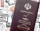

پذيرش > اخبار > 223 امضا در مخالفت با تصویب قانون جدید گذارنامه مبنی بر لزوم اجازهی ولی قهری برای (...)


 223 امضا در مخالفت با تصویب قانون جدید گذارنامه مبنی بر لزوم اجازهی ولی قهری برای زنان مجرد زیر 40 سال؛ جمعآوری امضا ادامه دارد 223 امضا در مخالفت با تصویب قانون جدید گذارنامه مبنی بر لزوم اجازهی ولی قهری برای زنان مجرد زیر 40 سال؛ جمعآوری امضا ادامه دارد
1 آذر 1391 - - نسخه قابل چاپ
تغییر برای برابری: پس از اعلام خبر تغییرات در قانون جدید گذرنامه و الزامی شدن اجازهی ولی قهری یا حاکم شرع برای زنان مجرد زیر چهل سال، موجی از اعتراضات در میان فعالان زن و مردم ایجاد شده است. از جمله دعوت به اعتراض تلفنی به نمایندگان مجلس و نوشتن نامهی اعتراض به آنها. تا امروز برای این نامه 223 امضا گردآوری شده که جمعاوری امضا همچنان ادامه دارد. در متن این نامه که برای امضا آن میتوانید به اینجا مراجعه کنید، آمده است:
در تاریخ 23 آبان ماه، سخنگوی کمیسیون امنیت ملی اعلام کرد:« طبق مصوبه کمیسیون، صدور گذرنامه برای خانمهای مجرد زیر 40 سال با موافقت ولی قهری وی و در غیر این صورت با حکم حاکم شرع امکانپذیر است».
در حالیکه فشارهای اقتصادی روز به روز حلقهی زندگی را برای مردم تنگتر میکند و در حالیکه زنان دوشادوش مردان میکوشند تا چرخهای زندگی را به گردش دربیاورند، مردان قانونگذار ظاهرن دغدغهی مهمتری از عقبراندن زنان به لحاظ قانونی ندارند. ساکنان بهارستان میکوشند به جای تقدیر از تلاشهای زنان در کسب مدارج علمی، به جای تسهیل زندگی زنان و مادران ایرانی در به دست گرفتن سرنوشت خویش و یا فراهم کردن امکانات بیشتر برای پیشرفت زنان در جامعهی امروز ، روز به روز همان اندک حقوق باقی مانده برای زنان را از آنان بازپس بگیرند.
ما مردان و زنان ایرانی مدافع برابری حقوقی آحد ملت، و معترض به این تبعیض ها و عقبگردهای قانونی هستیم و از مجلسیان، رسانه ها می خواهیم صدای اعتراض ما را به گوش مسولان برسانند و مانع طرح و تصویب این قانون واپسگرایانه شوند. امید که صدای برابری خواهی این بار شنیده شود.
اسامی امضاکنندگان به ترتیب حروف الفبا:
آذین نوروزی
آرزو ایران نژاد
آرش ارشاد
آرش حافظی
آزاده خرازی
آزاده خسروشاهی
آزاده دواچی
آزیتا رضوان
آوا علوی
آیدا سعادت
احمدی
ارشاد عليجاني
ارمغان ژند
اشکان رضوی
اشکان منفرد
اشکان یزدچی
اكبر مهدي
اکبر حاجی زاده
الناز باجوری
الناز زینالی
الهه محمدی
الهه منصف
الیا گلیان
الیزابت رخ فیروز
امیر ابراهیمی
امیر رشیدی
امیرپرویز احمدی
بتول ازهاری
بنان سببی
بنفشه جمالی
بهار تدینی
بهار سیدی
بهاران اشراق
بهاره افقهی
بهاره رضايي
بهروز عادل
بهنازعراقي
بهنوش آمری
بیانه محمدی
بیتا
بیژن پیرزاده
پانته آ مهدی نژاد
پانته آ نیکدست
پاونی عباسی
پایا پوینده
پرتو نوری علا
پرستو سرمدی
پویا فرام
پویش عزیزالدین
تجسم بهنام
ترنم بهنام
تعادلخواه
تقي بهنام
تهمينه زاردشت
ثمر فاطمى
جعفر قدیم خانی
جهان نورمهربخش
حدیث علمی
حسن زرهی
حسن نايب هاشم
حسن نجفی
حميده تقي زاده
حمید حمیدی
حيدري
خدیجه مقدم
راضیه (پری) نشاط
رامین امن گستر
رضا مبین
رعنا طایفی
رهام عزیزی
ریحانه مظاهری
زهرا آران
زهرا ایزدی
زهرا باقری شاد
زهرا نصراللهی
ژانت آفاری
ژیلا گلعنبر
ژیلا مهدویان
ژینا مدرس گرجی
سارا بنی اسدی
سارا پوررضا
سارا تنها
سارا کاویانی
ساره ناصری
سامان شاه محمدی
ساناز پاکنژاد
سجاد شاهمرادی
سحر رضازاده
سحر عبادی
سدمدن نورایی
سعیده سهرابی
سلمی شریفی
سمیرا مرادی
سمیرا معصومی
سمیه بهادری
سمیه جم
سوسن طهماسبی
سید اکبر روحانی
سیمین کاظمی
سینا کجباف
شادی فلاح
شاهین امیری
شایسته نمازی
شبنم شعبانی
شعله زمینی
شيرين فاميلي
شیدا مهری
شیوا چهاردولی
شیوا داریان
شیوا نوجو
صادقی
صبری نجفی
طاهره برجیس
عباس نجاتی
عزلتی
عسرا
علی خردپیر
علی طایفی
غزل زارع
ف.م
فاطمه اسماعیلی
فاطمه مسجدی
فرح طاهری
فرزانه ابراهیم زاده
فرشید یاسائی
فرنام بهنام
فرنوش اميرشاهي
فرنوش تهرانی
فروغ سمیع نیا
فروغ میم
فريده رضايي
فریبا حیاتی
فریبا مودت
فریده غائب
فیروزه مهاجر
كوكب حسني
کاروان
کاویان صادق زاده میلانی
کتایون نجفی
کمیل احمدی
کیوان باخدا
لیلا اخوان
لیلا عباسی
لیلا فولادی
لیلا مردانی
ﻟﯿﻼ موری
لیلی آهی
مجید تمجیدی
محبوبه بیات
محبوبه حسني
محبوبه حسین زاده
محسن حسین زاده
محسن زمانی فکری
محسن فرشیدی
محمد شوراب
محمد علی اصلانی
محمد مسعودی
محمود اخوان
مرجان فرزین
مرضيه وثوق
مرضیه بخشی زاده
مرضیه نوری
مریم اهری
مریم اهری
مریم بختیاری
مریم جوزی
مریم حسین خواه
مریم رحمانی
مریم کارمند
مریم کریمی
مریم میلانی
مژان همت
مژگان ثروتی
مژگان علیرضاقمی
معصومه ضياء
معصومه علی اکبری
مليحه وثوق
منوجهر فاضل
منیژه خمسی
مه سا
مهديس دادفر
مهدی جباری
مهدی رفیع زاده
مهدی نعمتی
مهدی نوذر
مهدیه فراهانی
مهرداد درویش پور
مهرداد سید عسگری
مهرناز بريرانى
مهفام نیکخو
مهگل قلی پور
مهناز هادیون
موسي نژاد اكبر
مينا وثوق
می نو ثابری
میترا نجفی
میثم رودکی
میلاد کمیلی
مینا آدینه
مینا کشاورز
ناهید توسلی
ناهید میرحاج
نجاتی
ندا احمدی
نرگس رحمان پور
نسرین افضلی
نسرین حسین پور
نسرین حسینی نیا
نسرین حمیدی
نسیم مسعودیان
نفیسه آزاد
نگار بوستانی
نوید محبی
نیره توحیدی
نیوشا حسین زاده
هاله اکبرزاده
هاله اکبرزاده
هما فرزین
ویدا امیرمکری
یاسمن امین
یاور خسروشاهی
یگانه مرادیان
ارسال به
بالاترین
،
توییتر
،
فریندفید
،
فیسبوک
در همين بخش :
 پروین ذبیحی برنده جایزه حقوق بشری سازمان غيردولتى اتريشى سودويند شد پروین ذبیحی برنده جایزه حقوق بشری سازمان غيردولتى اتريشى سودويند شد
پخش کارت پستال و بروشور در روز جهانی زن در تهران
تمدید زمان برای امضای بیانیهی جمعی از فعالان زن به مناسبت هشت مارس
مجوزی که در نطفه خفه شد
بیش از 2000 امضا در اعتراض به تبعیض های آموزشی به مجلس تحویل داده شد
ديگر بخش ها :
طرح یک میلیون امضا
|
مقالات
|
سایت نوشته ها
|
اخبار
|
گزارش كمپين
|
گفت و گو
|
علیه سکوت
|
كوچه به كوچه
|
نامه های شما
|
گزارش ویژه
|
گفتگو با اعضا
|
ویژه سالگرد کمپین
|
تصویر برابری
|
دل آرام علی
|
تریبون
|
مقالات
|
تاریخ شفاهی
|
خارج از چارچوب
|
کتابخانه
|
درباره کمپین
|
کمپین در شهرها
|
کمپین در بند
|
صدای تغییر
|
ویژه 22 خرداد
|
لایحه حمایت از خانواده
|
گالری
|
عشا مومنی
|
امیر یعقوبعلی
|
خدیجه مقدم
|
راحله عسگری زاده و نسیم خسروی
|
پروین اردلان،جلوه جواهری، مریم حسین خواه، ناهید کشاورز
|
زینب پیغمبرزاده
|
سعیده امین، سارا ایمانیان، محبوبه حسین زاده، ناهید کشاورز و همایون نامی
|
احترام شادفر
|
نسیم سرابندی زاده،فاطمه دهدشتی
|
وبلاگ مهمان
|
پرونده خرم آباد
|
دستگیری ها
|
مریم مالک
|
پرستو اللهیاری
|
مهرنوش اعتمادی
|
سمیه رشیدی
|
Other Languages
|
همراهان
|
«فراخوان کمپین ده روز با بهاره هدایت»
| English
|